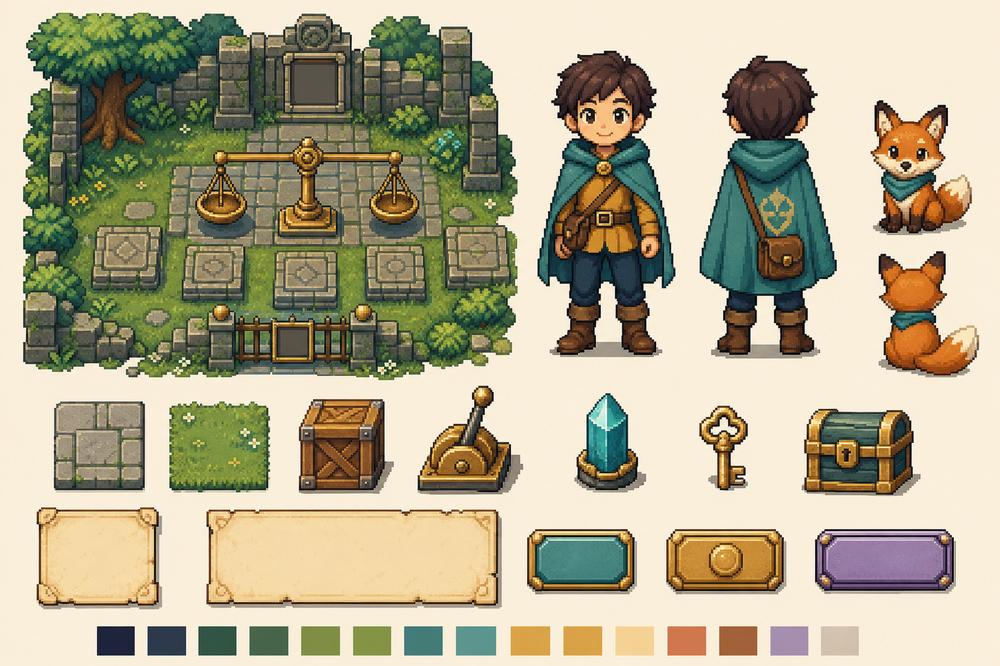
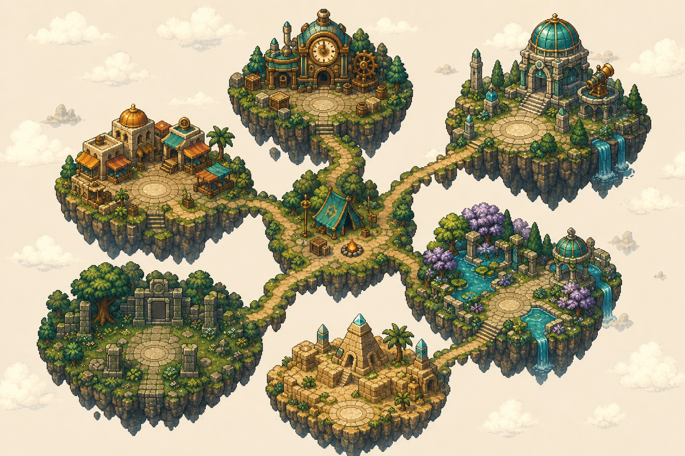
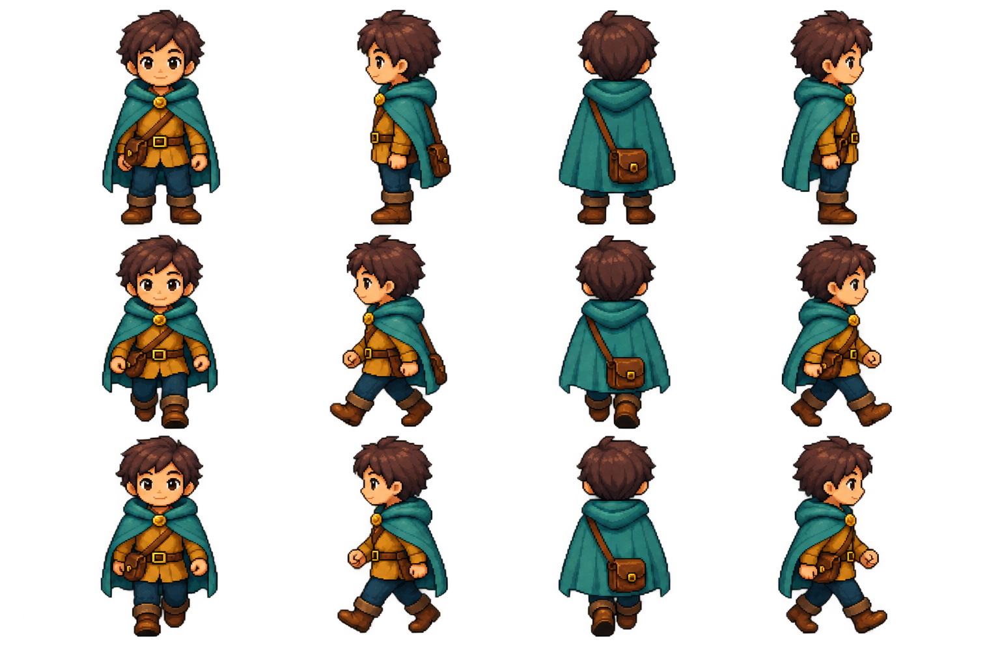
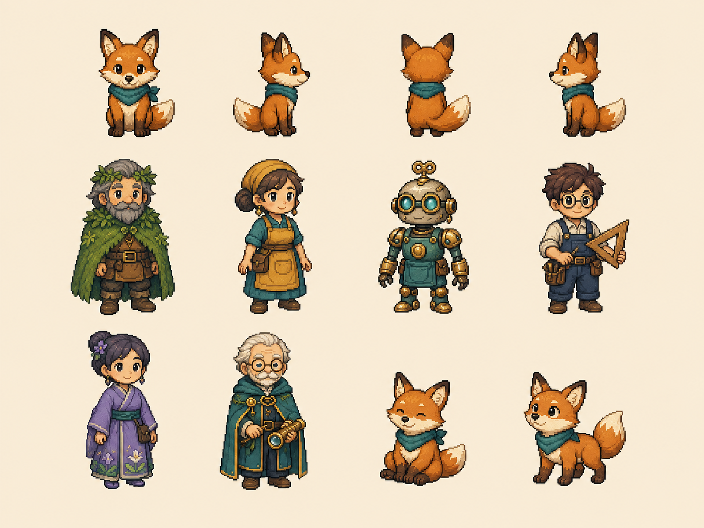
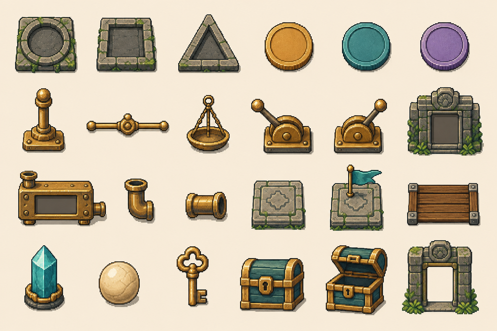
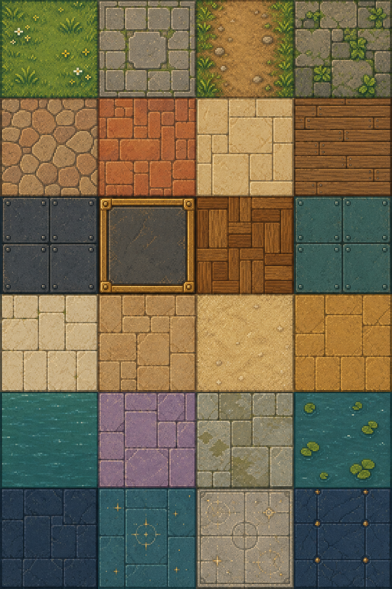
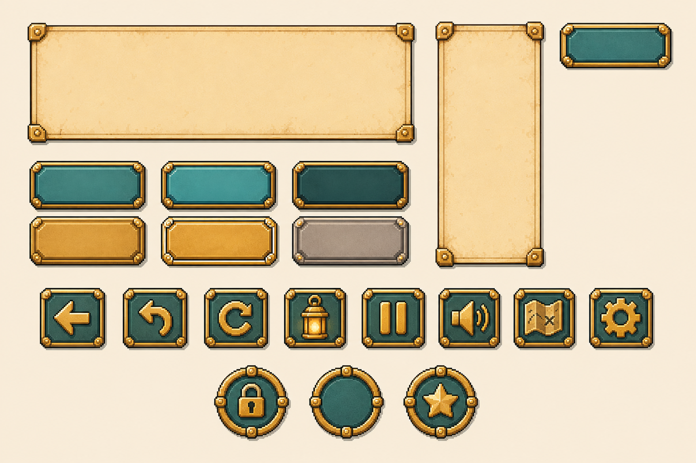
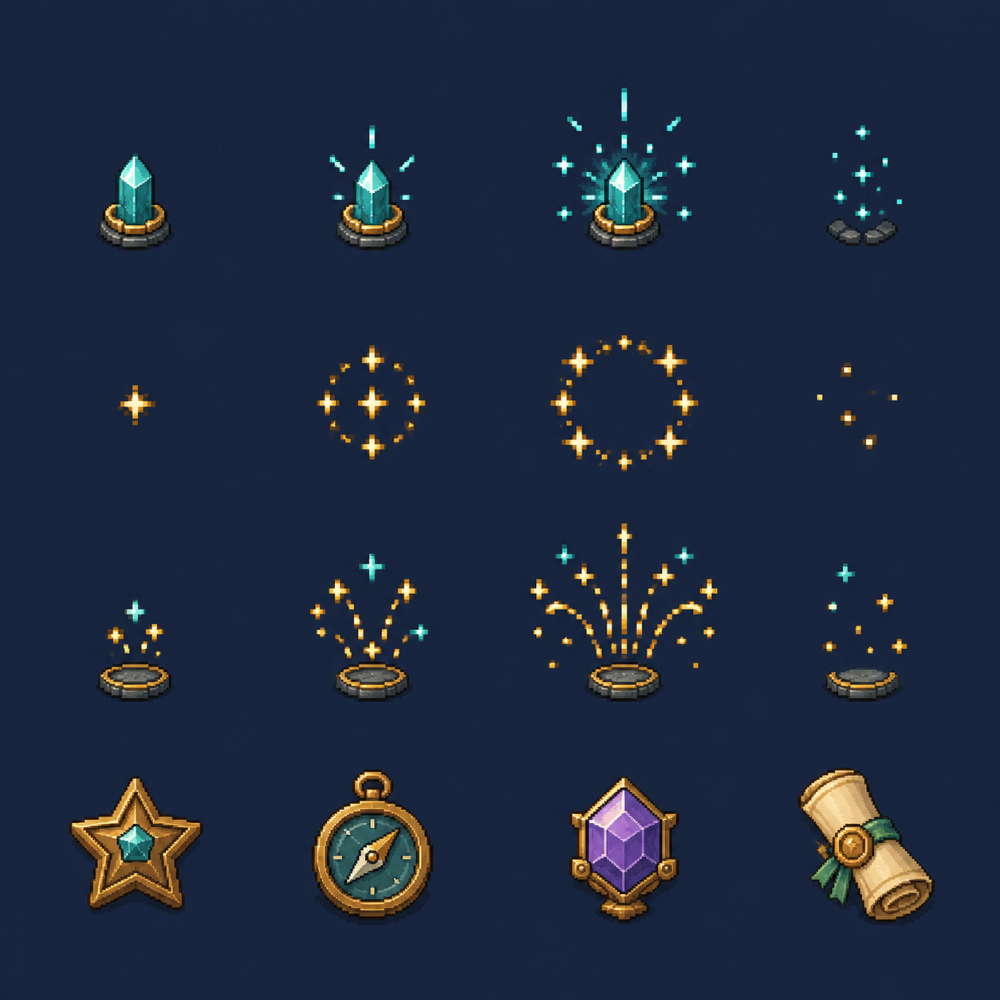
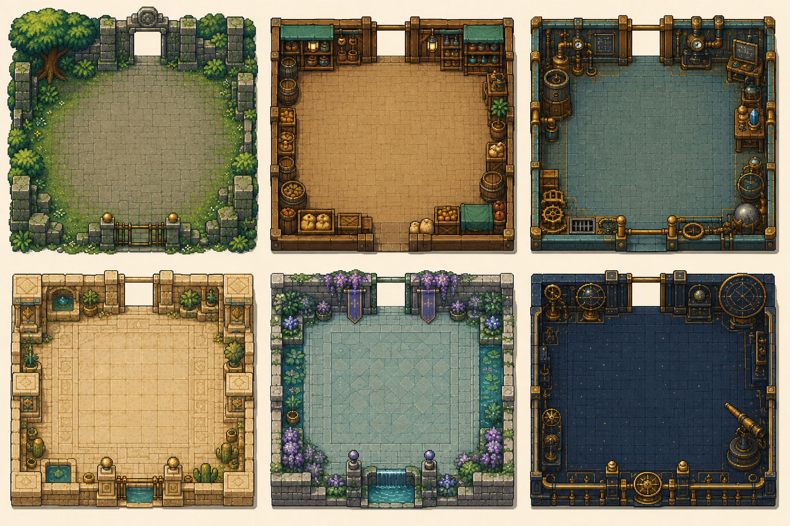

PIXEL MATH · ART DIRECTION / 2026.09.08
数字群岛，开始成形。
浅奥数学解谜冒险的首套统一美术母版。苔藓遗迹、黄铜机关、青绿能量与羊皮纸界面，共用同一张风格参考，由内置 imagegen 分批生成。
6 个主题章节18 关数学规则已验算9 类当前母版最终引擎：Godot
本轮交付状态：策划与源图包 v1当前图片用于确定统一视觉和继续制作。主角修订版有真实透明通道；其余多数图仍带底色。切片、逐帧锚点、透明边缘与地形拼缝需在 Godot 素材整备阶段继续验证。原始图片未被本预览页面改写。







